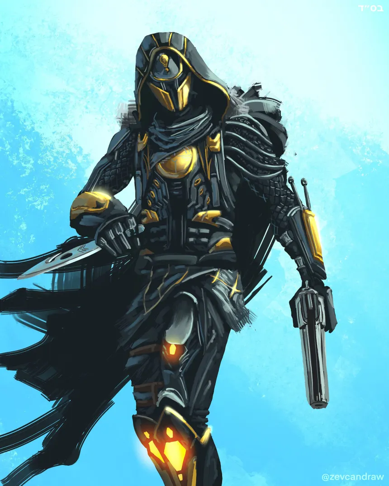

Hunters
Hunters are the stealthy class - focusing on weapons, and keeping themselves away from enemies in order to strike from the shadows.

Like all other classes, hunters have 5 subclasses. They are:
- Nightstalker - Void Subclass
- Gunslinger - Solar Subclass
- Arcstrider - Arc Subclass
- Threadrunner - Strand Subclass
- Prismatic Hunter - Prismatic Subclass
The kits of the subclasses of hunters is decent - however in its current state, I would say it is either the worst, or the second worst in terms of kit, beaten by Warlock, or Titan.
Some meta hunter builds include:
- Wolfsbane Tank Hunter
- Tempest Strike Hunter
- Inmost/Cytr Ability Spam on Prismatic
- Solar Hunter w/ On Your Mark
- Void Hunter - Omnioculus/Graviton Forfeit
Back Home